Once you have selected a partition scheme in the left panel its details will be displayed on
the right panel.
If you click “Edit partitions” button on the bottom, the RefSetPartitioner is opened.
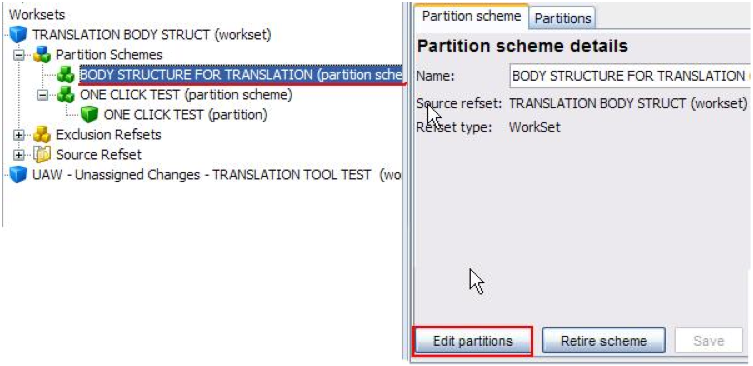
- The refset partitioner has the following characteristics:
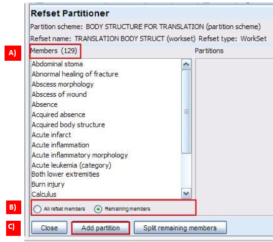
A) Number of members
B) Members list in alphabetical order, and options for displaying them
C) Action buttons:
- ADD PARTITION to create new partitions
- SPLIT REMAINING MEMBERS to create adittional partitions with any remaining members after
new partitions have been created (explained in detail below).
- Click “Add partition” button to create a partition
- You may choose to partition your workset according to different criteria: by number,
e.g, a partition including 20 concepts; by hierarchy, e.g. a partition including concepts
that are descendant of a given concept; by string match, e.g. a partition including
concepts with similar strings or dragging indiviual concepts into a new partition.
Examples of these are provided in the sections below.
- Whenever you create a partition, you should define a partition name first.
Partition creation: by hierarchy
- This criterion will allow you to select the concepts that are descendant of a specified
parent concept.
- Select “Is descendant of” option in the Partitioning selector combo box (Is descendant
of is preconfigured by default)
- A parent concept must be included. In order to do this, you must drag and drop the
parent concept from the RefSet Partitioner members window into the Parent concept window.
(You may also open the taxonomy tab in the left panel, select the concept that will be the
parent of your partition and drag and drop it into the partition editor tab.)
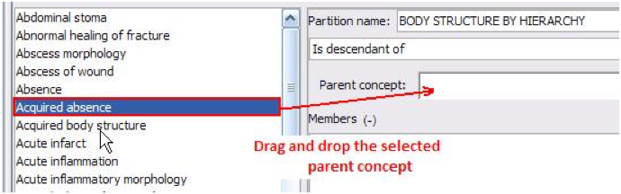
- The SELECTED PARENT and ALL its descendants will be extracted from the workset.
- You may select Preview to see the concepts listed according to your selection
criterion.
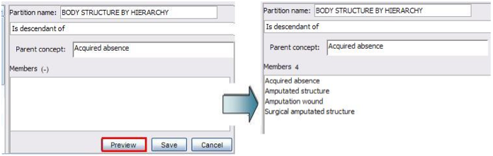
- Note: When clicking “Preview”, the concepts are listed. However, you must click “Save”
to create the partition (this apply to all criteria used for partitioning).
- When the partition is created, it is displayed in the Refset Partitioner screen with the
number of members in brackets
- You may click on the check-box to see the members
- Notice that the list of workset members is now 125, because those included in the
partition have been removed from it. Once the partition is created you will see that these
concepts are no longer in your workset on the left and the number of remaining concepts to
be partitioned decreases with each subsequent partition, whichever the criterion used for
partition creation is.
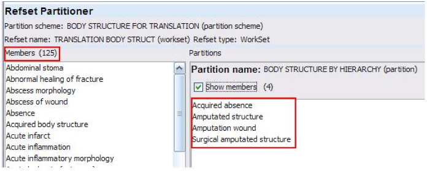
Partition creation: by quantity
- This criterion will randomly extract the specified number of concepts from the
workset.
- Select “Quantity” in the Partitioning combo box and define the number of concepts to be
included.
- You may click “Preview” to see the selected concepts and then SAVE.
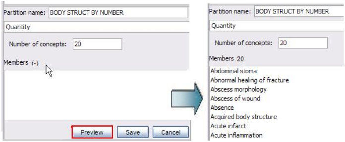
- When the partition is created, it is displayed in the Refset Partitioner screen with the
number of members in brackets
- You may click the check-box to see the members.
Partition criterion: by string match
• The selection is made according to the identification of concepts that share similar
semantic structures.
- Select “String match” and define your string. Asterisks may be used as wildcards, so you
can write a word between asterisks and all the workset concepts including that word will
be retrieved. Click “Preview” to see your selection, then SAVE:
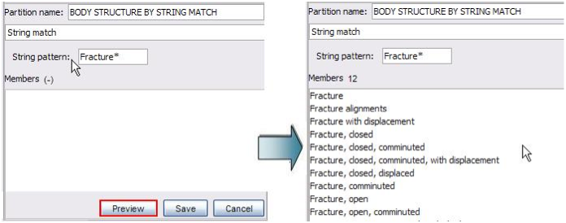
Partition creation: by concept dropping
- With this option, concepts may be directly dragged and dropped from the worklist.
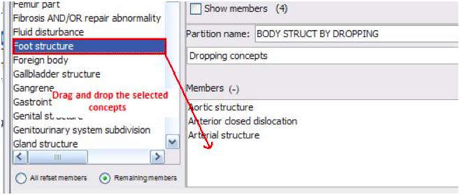
- Only one concept or several concepts (continuous or discontinuous in the list of
members) may be selected at a time.
Splitting of remaining worklist members
You may split the remaining concepts into pre-specified proportions:
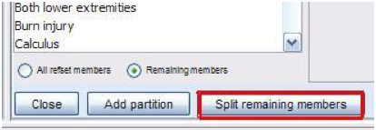
- Click the “Split remaining members”. The refset splitter is displayed on the right. Give
a name to the remaining partitions (in this case, BODY STRUCT BY SPLIT REMAINING) and
define your split pattern (the sum must be 100%).
- Click “Calculate partitions” to display the number of concepts to be included. Click
SAVE.
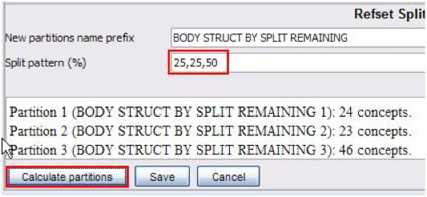
Changes in already created partitions
You may display an already created partition, select a concept and drag it back to the RefSet
Partitioner. From there, you may drag it into another partition and/or into the original
one.
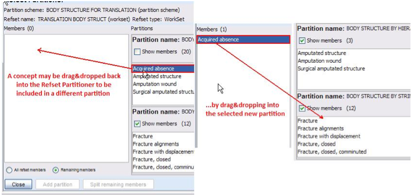
Creation of one partition from a whole workset
You may also create a single partition from the whole workset by clicking the ‘Create one
click partition’ button in the Workset details panel.
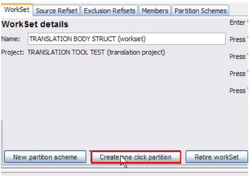
- The One click partition will have the same number of members as the workset.
- You should specify a name for your partition first.
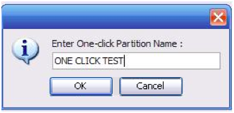
- The partition scheme and the one click partition are automatically generated. Opening
the ‘Members’ tab in the Partition details pane will show the list of members, as well as
their number:
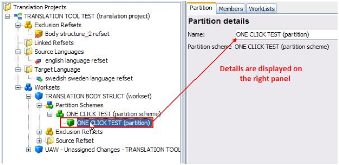
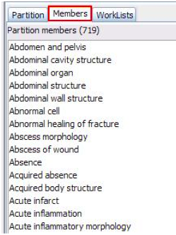